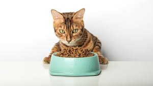
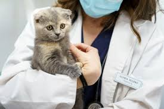
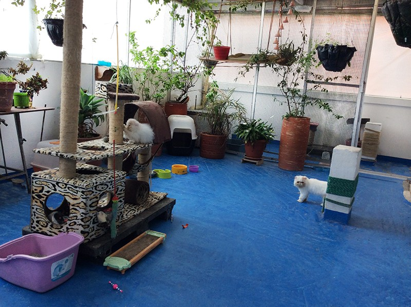
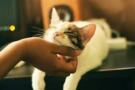
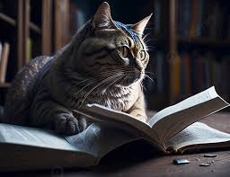
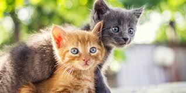

.png)
Nuestros Servicios
-
Asesoramiento Personalizado: Expertos en comportamiento felino a tu disposición
Nuestro equipo de expertos en comportamiento felino está disponible para brindarte orientación personalizada sobre cualquier aspecto del cuidado de tu gato. Ya sea que necesites ayuda con problemas de conducta, consejos sobre adaptación o simplemente desees entender mejor a tu mascota, nuestros especialistas te proporcionarán soluciones efectivas basadas en años de experiencia en el campo felino.
-
Tienda Especializada: Productos de alta calidad seleccionados por expertos
En nuestra tienda especializada, encontrarás una cuidadosa selección de productos premium para gatos, desde alimentos de primera calidad hasta juguetes enriquecedores y accesorios innovadores. Cada producto ha sido rigurosamente evaluado por nuestros expertos felinos para garantizar que cumple con los más altos estándares de calidad y seguridad. Nos enfocamos en ofrecer artículos que realmente contribuyan al bienestar y felicidad de tu mascota, evitando productos innecesarios o de dudosa calidad.
-
Servicios Veterinarios: Atención médica preventiva y de emergencia
Contamos con un equipo veterinario altamente calificado que ofrece servicios médicos completos para tu felino. Nuestros servicios incluyen chequeos regulares, vacunaciones, tratamientos preventivos contra parásitos, y atención de emergencias las 24 horas. Además, disponemos de equipamiento de última generación para diagnósticos precisos y realizamos procedimientos quirúrgicos con los más altos estándares de calidad. Nuestro enfoque se centra en la medicina preventiva para mantener a tu gato saludable y detectar cualquier problema potencial en sus etapas iniciales.
 -
Guardería Felina: Cuidado profesional mientras estás ausente
Nuestra guardería felina ofrece un ambiente seguro y acogedor para tu gato durante tus ausencias. Contamos con espacios individuales amplios y climatizados, áreas de juego supervisadas y personal especializado las 24 horas. Cada huésped recibe atención personalizada, siguiendo sus rutinas de alimentación y medicación específicas. Además, proporcionamos actualizaciones diarias con fotos y videos para que puedas estar tranquilo sabiendo que tu felino está en las mejores manos. También ofrecemos servicios adicionales como cepillado diario, sesiones de juego extra y monitoreo veterinario si es necesario.
-
Escuela para Gatos: Programas de socialización y entrenamiento básico
Nuestra escuela para gatos ofrece programas especializados de socialización y entrenamiento básico diseñados para ayudar a tu felino a desarrollar habilidades sociales y comportamientos positivos. A través de sesiones individuales y grupales, trabajamos en aspectos como la socialización con otros gatos, el uso adecuado del arenero, la adaptación al transportín y técnicas básicas de obediencia. Nuestros instructores certificados utilizan métodos positivos y respetuosos, adaptados al ritmo y personalidad de cada gato, creando un ambiente seguro y estimulante para el aprendizaje.
 -
Servicios de Peluquería: Cuidado estético y mantenimiento del pelaje

Nuestro servicio de peluquería felina ofrece una amplia gama de tratamientos especializados para mantener el pelaje de tu gato en óptimas condiciones. Contamos con peluqueros certificados que utilizan técnicas suaves y productos específicos para gatos, asegurando una experiencia relajante y segura. Los servicios incluyen cepillado profesional, desenredado, baños terapéuticos, corte de uñas y tratamientos especiales para diferentes tipos de pelaje. También ofrecemos asesoramiento sobre el mantenimiento del pelaje en casa y recomendaciones personalizadas según la raza y las necesidades específicas de tu gato.
-
Base de Datos Completa: Información detallada sobre razas, salud y cuidados básicos
Nuestra extensa base de datos proporciona acceso inmediato a información detallada y actualizada sobre todas las razas de gatos, incluyendo sus características físicas, temperamento, necesidades específicas de cuidado y predisposiciones genéticas. También incluimos una biblioteca completa de artículos sobre salud felina, guías de cuidados básicos, consejos de nutrición y recomendaciones veterinarias. Esta información está respaldada por expertos en el campo y se actualiza regularmente para garantizar que nuestros usuarios tengan acceso a los datos más precisos y actuales para ecuidado óptimo de sus mascotas.
 -
Programa de Adopción: Encuentra tu compañero felino ideal
Nuestro programa de adopción está diseñado para conectar gatos rescatados con familias amorosas. Trabajamos en estrecha colaboración con refugios locales y realizamos una evaluación exhaustiva tanto de los gatos como de los potenciales adoptantes para garantizar una compatibilidad perfecta. Cada gato en nuestro programa recibe atención veterinaria completa, incluyendo vacunación, desparasitación y esterilización antes de ser adoptado. Además, ofrecemos apoyo continuo después de la adopción, incluyendo consejos de adaptación, seguimiento veterinario inicial y asesoramiento conductual para asegurar una transición exitosa a su nuevo hogar.